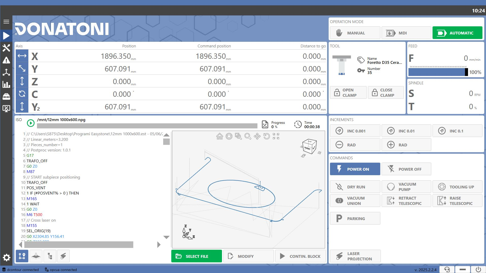
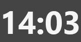
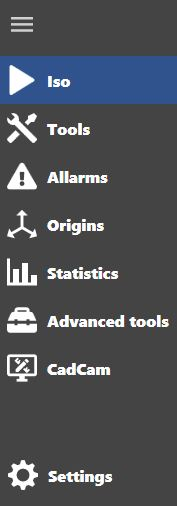
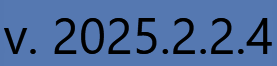
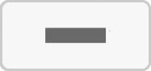
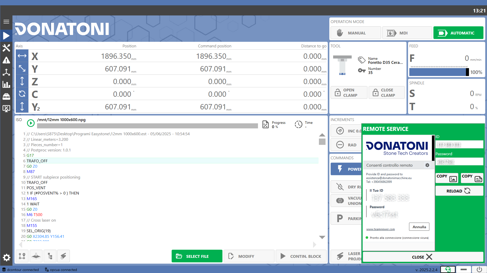
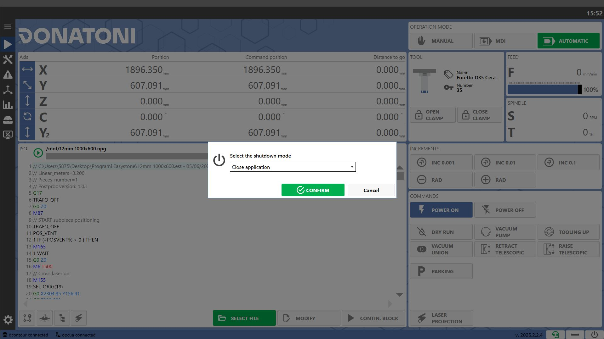

The system has been designed to facilitate machine operation and management for the operator. The software allows the operator to:
Control the machine manually
Send commands/instructions to be executed by the machine
Load and run working files
Manage the tool magazines
Monitor working execution on screen
View statistics relating to the machine and the work it has performed

Upper Section
Top Bar
The top bar of the application displays active warning and error messages. The operator can access the Alarms page by pressing the messages.
 | Time |
Message | |
Alarm | |
Error |
Machine Operating Status
The machine operating status is visible at the top of every page of the application.
The logo always remains white, while the background can change color depending on the machine operating status.
The possible operating statuses are listed below:
Idle | |
Working | |
Error | |
Warning |
Side Menu
The side menu is located on the left and allows navigation between the different program pages.
 |
Menu | |
ISO | |
Tools | |
Alarms | |
Origins | |
Statistics | |
Tools | |
CadCam | |
Machine Settings |
Bottom Bar
Utility buttons are located on the right side of the bottom section of each screen, except on the “Machine Settings” page.

 | Version |
 | Remote Assistance |
 | Minimize |
 | Shutdown |
Remote Assistance
Clicking the Remote Assistance button in the bottom bar opens a panel containing the ID and Password to provide to Donatoni technical support when remote connection to the machine is required.

The Remote Assistance icon and the panel background are green when the system is online and ready for connection, and red otherwise.
 | ID |
Password | |
Copy as Image | |
 | Copy as Text |
 | Reload |
 | Close |
Application/Computer Shutdown/Restart
Clicking the Shutdown button in the bottom bar opens a window where the user can choose whether to close or restart the application or shut down or restart the computer.
